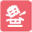

Kingoftokyoduel
Board Game Arena 官方规则文档
Objective
Become the most renowned monster of all time, whether that's by gaining the most fame, destroying the most buildings, or defeating your rival.
Gameplay
A typical turn consists of four phases:
- Roll Dice: Roll 6 dice. Lock those you want to keep and reroll the others. You get two rerolls, but you can change which dice are locked. (You may roll more if you use Dice Tokens.)
- Resolve Dice: Resolve the dice based on the symbols shown
- Buy Power Cards: Spend Energy to buy Power cards from the board. Gain 1 energy if you do not buy any cards. You can also discard and replace the shown cards for 2 energy.
Dice Symbols
| Symbol | Name | Description |
|---|---|---|
| Attack | Damage your rival | |
| Heart | Gain Life Points | |
| Energy | Gain Energy | |
| Fame | If you have three stars, move the Fame marker one space towards your side of the board. For each additional star, you can move it one more spot. | |
 |
Destruction | If you have three buildings, move the Destruction marker one space towards your side of the board. For each additional building, you can move it one more spot. |
| Special Power | Activate your monster's special power (specific to each monster). |
Power Cards
After resolving dice, you can pay Energy to buy Power cards. Each power card has a different effect or ability. Some are ongoing (marked with Keep) and some resolved immediately (marked with Discard).
Some Power cards also give you Buzz tokens. Buzz tokens are placed on the board over spaces and provide bonuses when a player moves their Destruction or Fame marker over them (ex. heal one Life Point, make one Attack, etc.). Certain Buzz tokens can extend or reduce the track.
Monsters and Monster Powers
Each monster has a unique power that gets invoked by some combination of Exclamation Point dice.
| Monster | HP | Difficulty | Power | How It Works |
|---|---|---|---|---|
| Gigazaur | 14 | 1 | Blockbuster | For every 2 Exclamation Points, you can move the Destruction or Fame marker by one. (3 will have no effect, but 4 allows you to move it twice) |
| Alienoid | 14 | 1 | Alien Technology | If you roll 2 Exclamation Points, you can add any die symbol to your roll. If you roll 3, you can add the same symbol again. |
| Space Penguin | 13 | 2 | Cryo-Gadgets | Each Exclamation Point gains you one Dice Token. But remember you can only hold two Dice Tokens, so rolling more Exclamation Points than two will do nothing. |
| Meka Dragon | 12 | 2 | Nuclear Breath | You can multiply your Attack symbols by Exclamation Point symbols to increase the damage. For example, 2 Exclamation Points and 3 Attack symbols result in 6 total damage. |
| Cyber Kitty | 13 | 3 | Cat-astrophic Power | Each set of 2 Exclamation Points earns 2 Energy. A set of 3 earns 4 energy. |
| The King | 15 | 3 | Territorial | If you roll 2 Exclamation Points, you can set a special Buzz token on the board. If one is already on the board, the king can move it or place a second one. If the opponent passes a marker over this token, movement stops. Unused movement is lost. |
Each monster's difficulty rating means how hard it is to defeat.
End Game
There are five ways to win.
- If a monster's Life Points reach zero, that player loses.
- If the Fame and Destruction markers are in the Spotlight Zones on one player's side, that player wins.
- The Fame marker reaches the end of one player's side, that player wins.
The Desturction marker reaches the end of one player's side, that player wins.
(Only if The 100th is in play) the power card deck is emptied.
Things to Remember
- Dice Tokens: You cannot have more than 2 Dice Tokens (extra dice) so don't bother trying to gain more in a single turn. Hoarding them is a bad idea too.
- Buzz Token Placement: Ensure Buzz tokens are placed on empty spaces and not on top of other tokens or markers.
- Power Card Costs: The rightmost Power card on the board always costs one less Energy cube than listed.